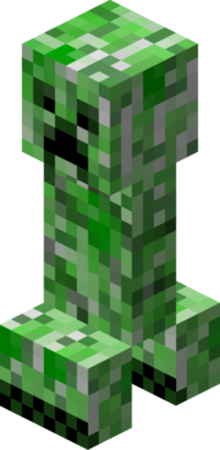

The Creeper is an iconic hostile mob character within the immensely popular sandbox game, Minecraft, developed by Mojang Studios. Recognizable by its distinctive appearance, a green, four-legged creature with a mysterious and unsettling expression the Creeper is infamous for its explosive tendencies. With a stealthy approach, it silently approaches players before emitting a hissing sound, indicating its imminent detonation.
